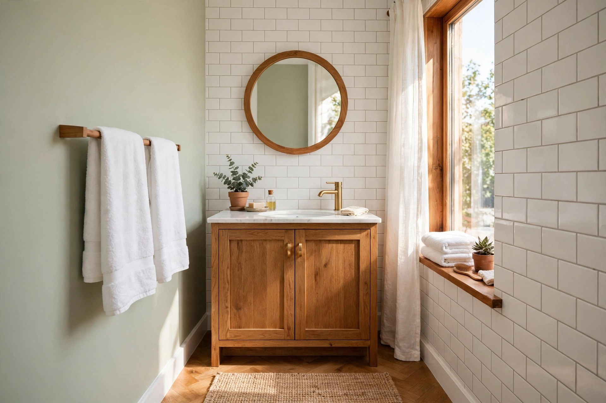

Small Bathroom Storage
Small Bathroom Colour Ideas That Make It Feel Bigger
Intro
Colour is the cheapest way to change a small bathroom. The right palette can double the light, lift a low ceiling, and make a tiny room feel twice as big — for the price of one tin of paint and a new set of towels.
This guide has 12 colour ideas for small bathrooms. Each one lists what it costs, and most need no tools at all — towels, paint and accessories do the job. All are renter-friendly.

1. White walls, one coloured towel — $10–$15
White walls reflect the most light, and one coloured towel — sage, terracotta or navy — gives the room its character. One accent colour is enough; more than two makes a small room feel busy. Change the towel, and the whole room changes.
2. A pale sage accent wall — $12–$18
Paint one wall pale sage green, and leave the rest white. Sage is calm, it suits plants, and it makes white tiles look warmer. One small tin of paint is enough for one wall, and it comes off with one coat of white when you move out.
3. Light tiles, dark grout — $8–$12
Dark grout on light tiles adds pattern without adding colour, and it hides stains better than white grout. A grout pen costs a few dollars and transforms a tiled wall in an afternoon. Keep the grout lines thin, so the pattern stays subtle.
4. A navy shower curtain — $10–$15
A navy shower curtain adds depth to a white bathroom, and the dark colour makes the white tiles look brighter by contrast. One curtain costs about $12 and changes the room more than any accessory. Choose a plain curtain, not a patterned one. Wash a navy curtain with a little vinegar the first time, so the colour stays deep.
5. Warm wood tones against white — $10–$20
A wooden bath mat, a wooden shelf, or a wooden soap dish adds warmth to white tiles. Warm wood against white is the classic small-bathroom combination — it feels like a spa, not a clinic. Keep the wood light, not dark, so the room stays bright.
6. A blush pink that feels like light — $12–$18
Pale blush pink on one wall reflects warm light and makes a small bathroom feel soft and bright. It suits white towels and chrome taps. One tin of paint covers one wall, and the colour is light enough to paint over easily.
7. Black fixtures for contrast — $15–$25
Black taps, a black towel rail, or a black-framed mirror add contrast to a white bathroom, and the dark lines make the room look designed. One black accessory is enough to anchor the room — more than three makes it feel dark. Black fixtures show water spots, so wipe them dry after your morning wash.
8. A teal towel set — $12–$18
Teal towels against white tiles add colour without paint, and you can change them in seconds. A set of two hand towels and one bath towel costs about $15. Teal suits white and wood, and it hides stains better than white towels.
9. A grey floor, white walls — $15–$25
A grey bath mat or grey floor tiles ground a white bathroom, so the white walls look taller. Grey is the easiest neutral — it goes with every towel colour, and it hides dirt better than white. Keep the grey light, not charcoal.
10. A yellow accent that feels like sun — $5–$10
One yellow accessory — a soap dish, a small plant pot, a hand towel — adds warmth to a white bathroom, like sunlight. Yellow is the cheapest accent colour there is, and one item is enough. More than one yellow item makes the room feel loud.
11. Terracotta towels and a plant — $12–$18
Terracotta towels with a green plant are the warmest combination for a small bathroom — the terracotta adds warmth, the plant adds life. Two towels and one small plant cost about $15. Terracotta suits white tiles and warm wood.
12. One colour, three shades — $0
The cheapest idea costs nothing. Pick one colour you already have — a towel, a curtain, a plant pot — and use three shades of it. Three shades of one colour look planned and calm, while three different colours look busy. This rule works in every small room.
Conclusion
Colour does not need to be expensive — it needs to be simple. White walls, one accent colour, and matching towels can make a small bathroom feel twice as big for under $25, without a single tile changed. Start with white and one towel, and let the colour do the work. Colour is the cheapest renovation there is — one tin of paint and a towel can change everything.
Budget recap
- One tin of paint for one wall: ~$15 - Towel set in one accent colour: ~$15 - One coloured accessory: ~$8
Total for a new colour scheme: ~$38 — or ~$15 if you start with towels alone.
Pinterest pin titles
- ""Small Bathroom Colour Ideas That Make It Feel Bigger""
- ""12 Bathroom Colour Palettes for Tiny Rooms""
- ""Paint, Towels, Tiles — 12 Colour Ideas That Open Up a Small Bathroom""